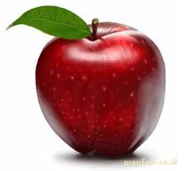

tentangbuah.com

Apel

Apel merupakan jenis buah-buahan, atau buah yang dihasilkan dari pohon buah apel.
Buah apel biasanya berwarna merah kulitnya jika masak dan (siap dimakan), namun bisa
juga kulitnya berwarna hijau atau kuning. Kulit buahnya agak lembek dan daging
buahnya keras. Buah apel memiliki beberapa biji di dalamnya.
Orang mulai pertama kali menanam apel di Asia Tengah. Kini apel berkembang di banyak
daerah di dunia yang suhu udaranya lebih dingin. Nama ilmiah pohon apel dalam bahasa Latin
ialah Malus domestica. Apel budidaya adalah keturunan dari Malus sieversii asal Asia Tengah,
dengan sebagian genom dari Malus sylvestris (apel hutan/apel liar).
Kebanyakan apel bagus dimakan mentah-mentah (tak dimasak), dan juga digunakan banyak jenis
makanan pesta. Apel dimasak sampai lembek untuk dibuat saus apel. Apel juga dibuat untuk menjadi
minuman sari buah apel.
Apel merupakan jenis buah-buahan, atau buah yang dihasilkan dari pohon buah apel. Buah apel biasanya berwarna merah kulitnya jika masak dan (siap dimakan), namun bisa juga kulitnya berwarna hijau atau kuning. Kulit buahnya agak lembek dan daging buahnya keras. Buah apel memiliki beberapa biji di dalamnya.
Khasiat Apel
- Mendukung kesehatan jantung
- Mengandung antioksidan
- Membantu menurunkan berat badan
- Menurunkan kolesterol dan tekanan darah
- Membantu pencernaan
- Mencegah diabetes
Daftar Harga
| Jenis Apel | Harga | |
|---|---|---|
| Per Kilo | Per Biji | |
| Apel Manalagi | 50.000 | 5.000 |
| Apel Fuji | 60.000 | 6.000 |
| Apel Anna | 70.000 | 7.000 |
| Apel Merah | 55.000 | 5.500 |